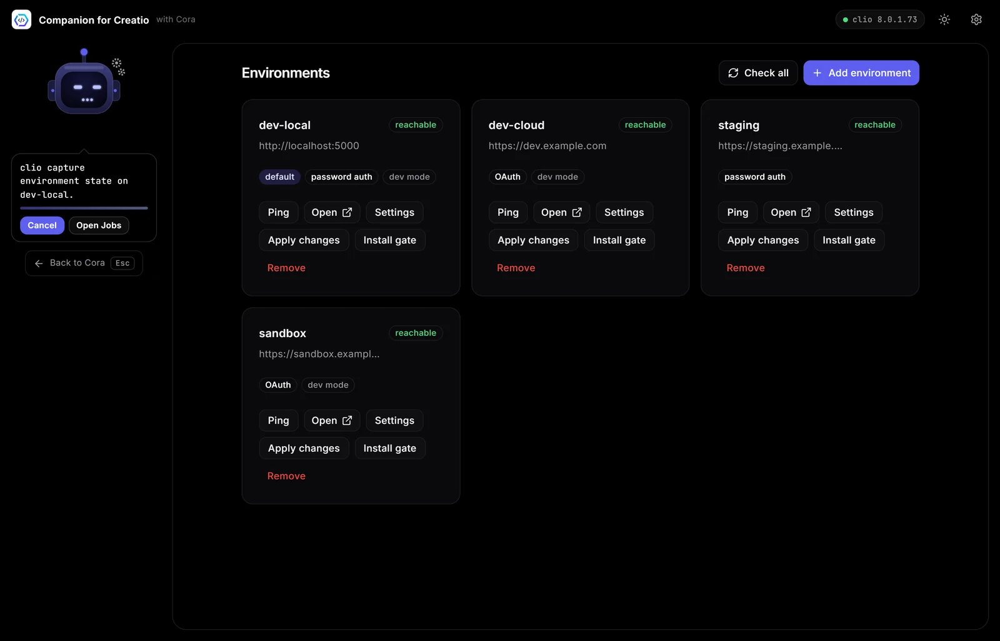

clio cheat sheet: the commands Creatio developers use most
clio is the open-source command line for Creatio, installed with dotnet tool install clio -g. Register an environment once with clio reg-web-app, then add -e name to every command. The most used commands are pull-pkg and push-pkg for packages, restore-workspace and push-workspace for Git, and compile-configuration, clear-redis-db and restart-web-app after a deploy.
clio is the open-source command-line tool for Creatio, maintained by Advance Technologies Foundation. It has well over a hundred commands; these are the ones that cover most days. Everything below was checked against clio 8.1. Run clio help for the full list and clio <command> --help for any command's options.
Install and update
dotnet tool install clio -g
clio update-cli
clio infoclio needs the .NET SDK. clio info shows the clio, cliogate and .NET runtime versions.
Environments
| Command | What it does |
|---|---|
clio reg-web-app dev -u URL -l USER -p PASS | Register an environment, or update its settings. |
clio ping-app -e dev | Check clio can reach the environment and sign in. |
clio open-web-app -e dev | Open the environment in your browser. |
clio install-gate -e dev | Install or update cliogate, which SQL, workspaces and log streaming need. Restarts Creatio. |
clio get-info -e dev | Show system information for the instance. |
clio unreg-web-app dev | Remove a registered environment. |
Careful with clio list-environments (also clio env): it prints your saved environment settings, which can include credentials. Don't paste its output into tickets or chats.
Packages
| Command | What it does |
|---|---|
clio list-packages -e dev | List packages in the environment. |
clio pull-pkg UsrOrders -e dev | Download a package to disk. |
clio push-pkg UsrOrders -e test | Install a package folder or .zip/.gz. Backs up first unless --skip-backup true. |
clio compile-package UsrOrders -e dev | Compile one package. |
clio lock-package / clio unlock-package | Lock or unlock a package. |
clio get-pkg-version / clio set-pkg-version | Read or set a package version. |
clio delete-pkg-remote UsrOrders -e dev | Delete a package from the environment. |
Applications
| Command | What it does |
|---|---|
clio list-apps -e dev | List installed applications. |
clio deploy-application MyApp -e dev -d test | Copy an application between environments. |
clio download-application / clio install-application | Download an application package, or install one from a file. |
clio uninstall-app-remote | Uninstall an application. |
Workspaces and Git
| Command | What it does |
|---|---|
clio create-workspace -e dev | Create a workspace in the current folder from the environment's editable packages. |
clio restore-workspace -e dev | Download the workspace's packages again (alias pullw). |
clio push-workspace -e test | Pack and install the whole workspace (alias pushw). |
clio publish-app | Publish a workspace to a ZIP archive. |
After a deploy: compile, cache, restart
clio compile-configuration -e test
clio clear-redis-db -e test
clio restart-web-app -e test --wait-readyRun them in that order. clio last-compilation-log -e test shows the last compile's log. clear-redis-db only clears the cache and restart-web-app only restarts, so you usually want both.
Data, settings and feature toggles
| Command | What it does |
|---|---|
clio execute-sql-script "SELECT ..." -e dev -v csv -d out.csv | Run SQL and save the result (needs cliogate 2.0.0.41+). |
clio set-syssetting | Get or set a system setting. |
clio set-feature UsrMyFeature 1 -e dev | Turn a feature toggle on (0 turns it off). |
clio create-data-binding | Bind lookup data to a package so it deploys with it. |
clio save-state / clio show-diff | Save an environment's state to a manifest, and compare environments. |
Local Creatio
| Command | What it does |
|---|---|
clio deploy-creatio --zip-file C:\Builds\creatio.zip | Install Creatio from a distribution zip (IIS on Windows). |
clio uninstall-creatio -e local | Remove a local instance: site, database and files. |
clio start / clio stop | Start or stop a local Creatio application. |
clio hosts | List Creatio hosts and their status. |
Watching what happens
clio listen streams Creatio's log over a WebSocket (needs cliogate), and clio healthcheck runs Creatio's health checks.
Prefer buttons to flags?
Companion for Creatio is a free desktop GUI for clio. It drives the same commands from screens for environments, packages, applications, workspaces, SQL and logs, and runs each long operation as a job with streamed output that you can watch and cancel. Credentials stay in clio.

Companion for Creatio is a free desktop app for Windows and macOS that runs these clio steps for you, as jobs you can watch and cancel.